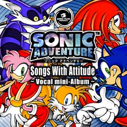

| ソニックアドベンチャーのヴォーカル・ミニアルバム発売決定！ | |
|  |
SONIC Adventure Vocal mini-Album "Songs With Attitude" |
|
発売日：１９９８年 １２月 ２日 価格：２１００円 品番：ＭＪＣＡ−０００３９ 発売元：（株）マーベラス・エンターテイメント 販売元：（株）ポニーキャニオン
| |
|
ソニックチームの最新作、ソニックアドベンチャーのテーマソングを集めた ヴォーカル・ミニアルバムをゲームに先行して、リリースすることが決まったよ！ リアルな新しいソニックの世界に相応しい曲が勢揃いしているよ。
ゲームの発売までもう少しだけど、これを聴いて楽しみに待っていてね！ | |
| - 収録曲 - |
| [It Doesn't Matter ...Theme of "SONIC"] |
| TNTのヴォーカリストTony Harnellが歌うソニックのテーマは、彼の生き様（アティテュード）を歌った曲だよ！ 「ポジティブ」と「スピード感」がキーワードです。 |
| [My Sweet Passion ...Theme of "AMY"] |
|
元気のいいアグレッシブな曲を聞きたい人へ。 CUTEな女の子ヴォーカルでFUNNY GIRL"AMY"を楽しんでくださいね。 |
| [Lazy Days ~Livin' in Paradise~ ...Theme of "BIG"] |
| この曲は、TGS'98秋のライブでもやったね。目を閉じて曲を聴けば、そこはお気楽極楽ビッグとカエルくんのパラダイス。 歌っているのは元DANGER DANGERのヴォーカリストTed Poleyだよ。 |
| [Believe In Myself ...Theme of "MILES"] |
| 今回のテイルスは、ソニックの後ろを付いて歩くだけじゃない「自立」がキーワード。 そんな彼へのメッセージソングです。 |
| [Unknown from M.E. ...Theme of "KNUCKLES"] |
| ソニックとは認め合いながらもライバル視？ナックルズってばそんなヤツ。 違う意味でクールだけど内面はアツい、そんな彼にピッタリなテーマだよ。 |
| [Open Your Heart ...Main Theme of "SONIC Adventure"] |
|
今回のメインテーマはこの曲！アニメタルの坂本英三に歌ってもらった発表会ヴァージョンとか、
BOWWOWの堀江くんに歌ってもらったライブとか色々あったけど、この完成ヴァージョンの歌を歌って
いるのは元HARDLINEのヴォーカリストJohnny Gioeliだよ。 もうCFとか"Power Play"とかでお馴染みかな？ ソニックとカオス、そしてエッグマンの関係を綴ったこの曲の歌詞はこちら。 |